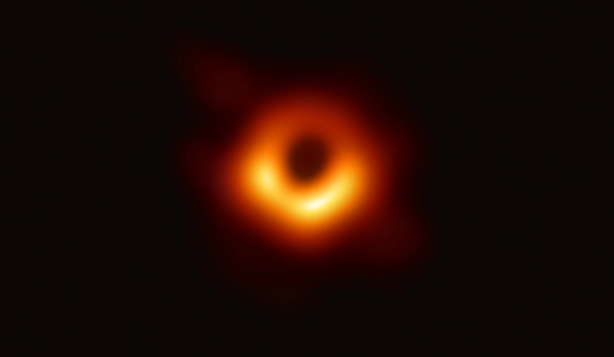
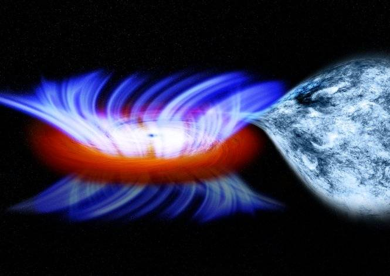
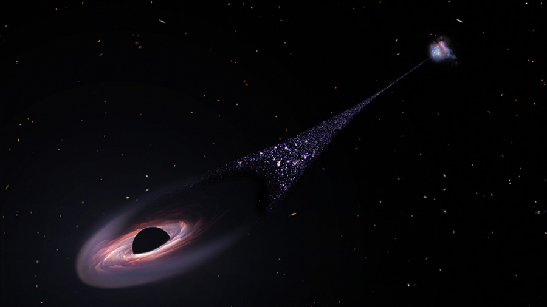
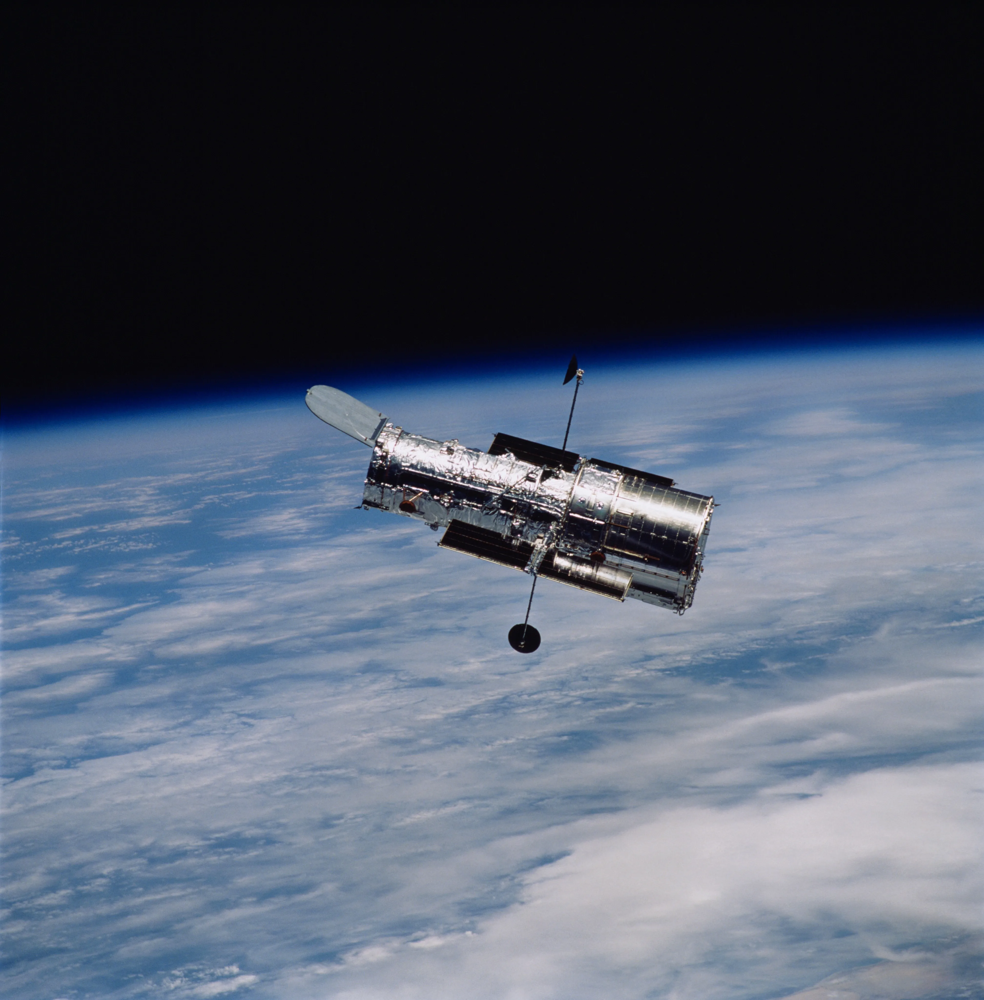

Black Holes: Enigmas of the Cosmos
Introduction:
Black holes, enigmatic cosmic entities, hold a gravitational grip so formidable that not even light can escape their clutches. Comprising two essential components, the event horizon and the singularity, these celestial mysteries defy conventional understanding.
Our Sun lacks the requisite mass to become a black hole, concluding its life as a white dwarf.

Understanding Black Holes:
In the vast tapestry of spacetime, black holes emerge as regions where gravity reaches an intensity that renders escape impossible for anything, including light. General relativity predicts that a sufficiently compact mass can deform spacetime to give rise to a black hole. The elusive event horizon, the boundary of no return, shrouds the core, the singularity, in a cloak of cosmic secrecy.
Characteristics and Challenges:
Despite their profound impact on surrounding objects, the event horizon itself possesses no locally detectable features, aligning with the predictions of general relativity. Black holes mimic ideal black bodies, reflecting no light, making them challenging to observe directly. Theoretical physics introduces the concept of Hawking radiation, an elusive emission from event horizons, presenting an additional layer of complexity.
Diverse Array of Black Holes:
The cosmos hosts four distinct types of black holes—stellar, intermediate, supermassive, and miniature. Each type arises from unique cosmic processes, contributing to the diversity of these enigmatic entities.
Stellar Black Holes:
Formed through the dramatic collapse of massive dying stars, stellar black holes represent cosmic remnants of celestial cataclysms. The gravitational collapse of a star's core, possibly triggered by a supernova, can create a black hole with infinite density. These stellar black holes typically range from five to 50 times the mass of the Sun.

Accretion Disks and Particle Winds:
Observational marvels like Hubble delve into the dynamic behavior of black holes. Stellar-mass black holes, surrounded by accretion disks, exhibit particle winds that become detectable in the ultraviolet spectrum. These winds, arising from the disk, reveal insights into the voracious appetite of black holes, offering a unique avenue for studying matter falling into their gravitational embrace.
Supermassive Black Holes:
Occupying the hearts of galaxies, supermassive black holes govern the dynamics of cosmic neighborhoods. Surrounded by swirling disks composed not only of gas but also stars, these colossal entities devour matter over extended timescales. Their meals, distinct from their stellar counterparts, unfold over periods that transcend human lifetimes.

Hubble's Unique Insights:
Hubble's ultraviolet instruments unravel the intricacies of particle winds emanating from accretion disks. By scrutinizing the absorption of light within these winds, Hubble provides a unique perspective on the matter ingestion process. While supermassive black holes engage in prolonged feasts, stellar-mass black holes exhibit intense eating binges that unfold over months, shedding light on the diversity of these cosmic phenomena.

Embark on a cosmic journey as we unravel the mysteries of black holes, exploring their diverse types, formation mechanisms, and the cutting-edge observations that propel our understanding of these enigmatic entities.